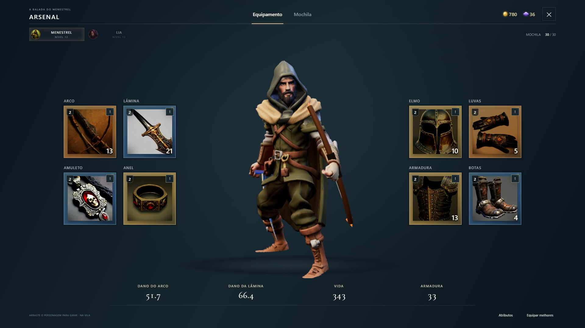
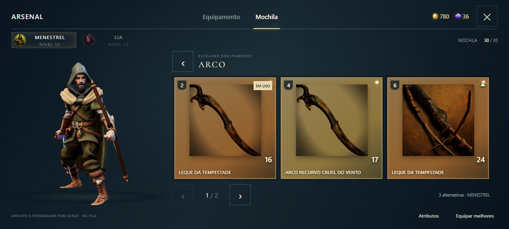
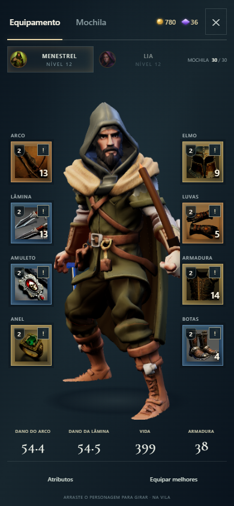

O inventário foi reorganizado seguindo as referências enviadas: o herói ocupa o centro, com cartões grandes de armas e acessórios à esquerda, proteção à direita e os atributos principais na base. A mochila completa fica em uma aba própria.
O equipamento que você usa
Arco, lâmina, amuleto, anel, elmo, luvas, armadura e botas ficam em espaços identificados ao redor do Menestrel. Para Lia, arco e lâmina dão lugar a cajado e foco arcano. O marcador ! indica que há peças novas daquele tipo na mochila.

Equipamento é a tela inicial do Arsenal. Arraste o personagem para girar a prévia.
Escolha pelo espaço
Toque em Arco para ver somente os arcos compatíveis, incluindo a peça em uso. Selecione uma alternativa para conferir Atual → Novo e equipar. A troca retorna ao personagem; quando há ganhos reais, o aviso de melhoria continua aparecendo por alguns segundos.

Escolher um espaço filtra as alternativas automaticamente, sem misturar tipos de equipamento.
O mesmo fluxo no celular
Em pé, os cartões ficam em duas colunas laterais ao personagem. Ao escolher uma peça, as alternativas aparecem ao lado dele. A comparação tem seu próprio painel, com o botão Equipar acessível.

Captura em 390×844. Oito espaços identificados e atributos na base.
Mochila, baú e serviços
A aba Mochila reúne todos os itens, com categorias e páginas. Venda, reciclagem, baú, desequipar e reforja continuam disponíveis nas ações de cada peça. Itens raros e lendários mantêm a confirmação antes de reciclar.
Capturas da interface real na bancada de testes. Nove resoluções, incluindo 1920×1080, 1066×480, 640×320 e 320×568; toque simulado e rotação no Chrome. Avaliação em aparelho físico ainda necessária.